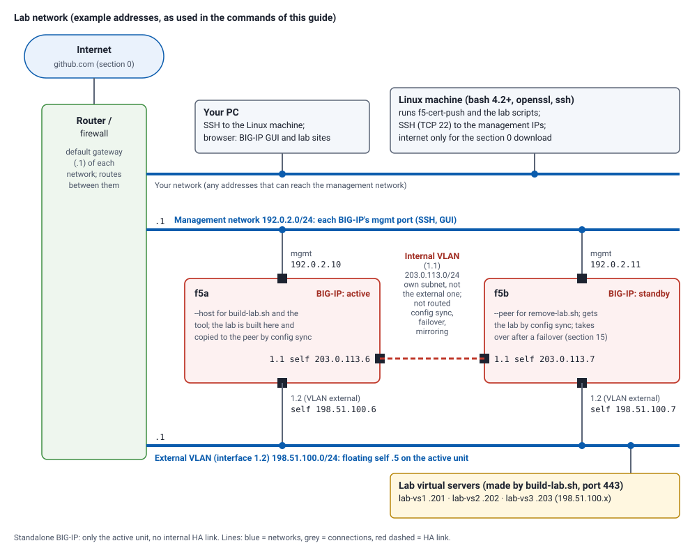

Lab: learn f5-cert-push on a lab BIG-IP
A hands-on lab, from nothing to a renewed certificate on an HA pair. You build a small, disposable lab on a lab BIG-IP with one script, then set up and use the tool exactly as you would the first time in production: install it, create its SSH key, save the certificate files you were sent, discover the BIG-IP, write the configuration, deploy, see what it refuses, roll back. One more script removes every lab item again, also if you stop half way, so the lab can be run as often as you like.
Use a lab BIG-IP. The lab only creates and removes objects named
lab-*, and the tool only changes the profiles you configure, but an HA pair is synchronised during the lab (config-sync copies the whole configuration). Start with the pair In Sync.
| Time | about 45 minutes (an extra 10 for the HA-only sections) |
| Works with | a standalone BIG-IP, or an active/standby pair in a sync-failover device group (both tested on 17.1) |
The lab network

The addresses in this guide are examples from the ranges reserved for documentation (RFC 5737), so none of them is a real address. Use your own in their place:
| Example in this guide | What it is | Used as |
|---|---|---|
192.0.2.10 |
management IP of the active BIG-IP (f5a) |
--host for the lab scripts, A= in section 1, host = in the configuration |
192.0.2.11 |
management IP of the standby BIG-IP (f5b; none for a standalone BIG-IP) |
--peer for remove-lab.sh, B= in section 1 |
198.51.100.0/24 |
the BIG-IPs' external VLAN (interface 1.2); floating self IP .5, unit self IPs .6 and .7 |
where build-lab.sh puts the lab virtual servers |
198.51.100.201-.203 |
the lab virtual servers lab-vs1-lab-vs3 (port 443) |
VS1=-VS3= in section 2; build-lab.sh picks them and writes them to lab-info.txt |
The tool and the lab scripts only ever connect to the management IPs, over SSH (TCP 22), from the Linux machine. The PC needs nothing installed: it is where you SSH to the Linux machine from, and where a browser can open the BIG-IP GUI and the lab sites.
The internal VLAN (the server side) is not affected. Neither the lab scripts nor f5-cert-push create, change
or remove VLANs, self IPs, routes, pools or backend servers. The lab's virtual servers have no pool: they only
present a certificate, which is all the lab needs. When build-lab.sh shows its plan, check that the virtual
server addresses are on the external (client-side) subnet: it takes them from the BIG-IP's first /24 self IP,
and if that is an internal one, answer n and run it again with --vs-ips A,B,C.
The lab scripts
| Script | What it does | Download |
|---|---|---|
build-lab.sh |
Builds the lab on a BIG-IP or HA pair (section 2) | from this copy · from GitHub |
remove-lab.sh |
Removes every lab item, at any point (section 16) | from this copy · from GitHub |
They are also in the release (lab/), which section 0 downloads anyway, and both have --help. To fetch
only the scripts onto a Linux machine:
curl -fsSLO https://raw.githubusercontent.com/lothortech/f5-cert-push/v2.2.2/lab/build-lab.sh
curl -fsSLO https://raw.githubusercontent.com/lothortech/f5-cert-push/v2.2.2/lab/remove-lab.sh
chmod +x build-lab.sh remove-lab.sh
0. Download the files
Everything is in the GitHub repository lothortech/f5-cert-push:
the tool, the lab scripts, the documentation (Markdown, and HTML in html/), the examples and the tests. Download
the v2.2.2 release onto the Linux machine you will run the lab from, in one of these ways. Each gives the same
files in ~/f5-cert-push.
With curl (or wget -qO- in place of curl -fsSL):
mkdir -p ~/f5-cert-push && cd ~/f5-cert-push
curl -fsSL https://github.com/lothortech/f5-cert-push/archive/refs/tags/v2.2.2.tar.gz | tar xz --strip-components=1
With git:
git clone --depth 1 --branch v2.2.2 https://github.com/lothortech/f5-cert-push.git ~/f5-cert-push
cd ~/f5-cert-push
(git notes that it is on a "detached HEAD": expected, as this is a release tag rather than a branch.)
Without internet access on the Linux machine: on a PC, download
f5-cert-push-2.2.2.tar.gz
or f5-cert-push-2.2.2.zip, copy it across (scp, a share), then:
mkdir -p ~/f5-cert-push && cd ~/f5-cert-push
tar xzf /path/to/f5-cert-push-2.2.2.tar.gz --strip-components=1
From the ZIP instead (it unpacks into f5-cert-push-2.2.2/ and loses the execute bits):
cd ~ && unzip -q /path/to/f5-cert-push-2.2.2.zip
mkdir -p ~/f5-cert-push && cp -a ~/f5-cert-push-2.2.2/. ~/f5-cert-push/ && rm -rf ~/f5-cert-push-2.2.2
cd ~/f5-cert-push && find . -name '*.sh' -exec chmod +x {} +
Check the download (every file against SHA256SUMS; silence means all match) and the version:
sha256sum -c --quiet SHA256SUMS && echo "all files OK"
./f5-cert-push.sh --version
You now have f5-cert-push.sh and f5-cert-install.sh (the tool), lab/ (the two lab scripts), docs/ and
html/ (this guide and the rest), examples/, tests/, and f5-cert-push.conf.example.
1. Create the tool's SSH key and authorise it on every unit
You need a Linux machine (bash 4.2+, openssl, ssh, tar; OpenSSL 1.1 or newer for this lab) that can reach
the BIG-IP management addresses on TCP 22, with root SSH access to the BIG-IP (a key, or the root password).
That is your own access; the tool gets a key of its own, which is what this section makes.
Where each command runs. The key pair is created on the Linux machine that runs f5-cert-push, never on the BIG-IP; the private key stays there. Only the one-line public key (
.pub) is added on each BIG-IP. Each command block below says where to run it.
Set your BIG-IP addresses for the commands in this guide: the management IPs of the active (A) and the
standby (B) unit; for a standalone BIG-IP, only A (see the lab network).
Run on: the Linux machine:
A=192.0.2.10; B=192.0.2.11
Pin each unit's host key, so this machine (and later the tool) knows it is talking to the real BIG-IP. It prints each unit's fingerprint. Run on: the Linux machine:
for h in $A $B; do ssh-keyscan -t ecdsa $h 2>/dev/null >> ~/.ssh/known_hosts; ssh-keygen -lf <(ssh-keyscan -t ecdsa $h 2>/dev/null); done
Compare each with the fingerprint the BIG-IP itself shows. Run on: each BIG-IP, as root, in bash (from the
Linux machine ssh root@$A, then ssh root@$B; at a (tmos)# prompt type bash first):
ssh-keygen -lf /config/ssh/ssh_host_ecdsa_key.pub
They must be identical. Log out of the BIG-IP again.
Create the tool's key (ECDSA: BIG-IP refuses ed25519). The comment f5-cert-push-lab lets remove-lab.sh
remove it from the BIG-IP at the end; in production use your own. Run on: the Linux machine, as the user you
run the lab as:
ssh-keygen -t ecdsa -b 384 -N '' -C f5-cert-push-lab -f ~/.ssh/f5_push_ecdsa
Authorise the public key on each unit (keys are not part of what an HA pair synchronises). This loop logs in to each unit with your own root access (it asks for the root password if you have no key for root) and appends the key there. Run on: the Linux machine:
for h in $A $B; do ssh root@$h 'cat >> /var/ssh/root/authorized_keys && chmod 600 /var/ssh/root/authorized_keys && restorecon /var/ssh/root/authorized_keys' < ~/.ssh/f5_push_ecdsa.pub; done
(Or paste the .pub line on each BIG-IP yourself, as root: User guide, section 4.)
Test the login exactly as the tool makes it. Run on: the Linux machine:
for h in $A $B; do ssh -i ~/.ssh/f5_push_ecdsa -o IdentitiesOnly=yes -o BatchMode=yes root@$h 'uname -n; tmsh show sys failover | head -1'; done
No password prompt; one unit says active, the other standby.
2. Build the lab
You need three unused addresses for the lab's virtual servers. By default the script picks .201-.203 (or the
next free ones) in the subnet of the BIG-IP's first IPv4 /24 self IP; give --vs-ips A,B,C otherwise.
From the folder you downloaded in section 0, build the lab against the active unit ($A, set in section 1).
Run on: the Linux machine:
cd ~/f5-cert-push
./lab/build-lab.sh --host $A
It logs in with your own root access (the root password is asked at most once; add --key FILE if that
access uses a specific key), not with the tool's key from section 1. It checks the BIG-IP (active, configuration
loaded, no lab items yet; for a pair, In Sync), shows the plan and asks before changing anything. Then it:
| Creates | |
|---|---|
| on the BIG-IP | lab-vs1, lab-vs2, lab-vs3 (port 443) using the client-ssl profiles lab-app1-clientssl, lab-app2-clientssl and lab-wild-clientssl; the last holds two certificates, an RSA (rsa entry) and an ECDSA (ecdsa entry) one for *.lab.test. Plus lab-spare.crt and lab-legacy.crt, used by no profile. Today's certificates expire in 60 days. For a pair, the device group is synchronised. |
| on this machine | ~/f5-cert-push-lab/: the lab CA, lab-info.txt (addresses and names), and received/: the renewed certificates, as a CA sends them (received/app1/app1.lab.test.crt + .key + intermediate.crt, received/app2/app2.lab.test.pfx, ...), and some bad ones in received/bad/. |
It makes no f5-cert-push configuration or folders: that is what the rest of the lab is for.
cat ~/f5-cert-push-lab/lab-info.txt
Set these for the commands below: the lab's virtual server addresses, from lab-info.txt:
VS1=198.51.100.201; VS2=198.51.100.202; VS3=198.51.100.203
3. Read the documentation first (2 minutes)
~/f5-cert-push/html/index.html is the documentation as web pages (copy the html/ folder to your desktop
and open it). Sections 5-6 of the User guide are what you do next (its sections 3-4, the SSH key, you
did in section 1).
4. Save the certificate files you were sent
The tool wants three PEM files per certificate: the certificate, the chain (intermediates) and the private key. Make one folder per certificate, private to you:
mkdir -p ~/certs/app1 ~/certs/app2 ~/certs/wildcard ~/certs/wildcard-ec && chmod 700 ~/certs ~/certs/*
R=~/f5-cert-push-lab/received
app1, the wildcard and the ECDSA wildcard came as PEM files with other names. A .crt or .key in PEM form
(text starting -----BEGIN) only needs a new name:
cp $R/app1/app1.lab.test.crt ~/certs/app1/cert.pem; cp $R/app1/app1.lab.test.key ~/certs/app1/privkey.pem; cp $R/app1/intermediate.crt ~/certs/app1/chain.pem
cp $R/wildcard/star.lab.test.crt ~/certs/wildcard/cert.pem; cp $R/wildcard/star.lab.test.key ~/certs/wildcard/privkey.pem; cp $R/wildcard/intermediate.crt ~/certs/wildcard/chain.pem
cp $R/wildcard-ec/star.lab.test-ecdsa.crt ~/certs/wildcard-ec/cert.pem; cp $R/wildcard-ec/star.lab.test-ecdsa.key ~/certs/wildcard-ec/privkey.pem; cp $R/wildcard-ec/intermediate.crt ~/certs/wildcard-ec/chain.pem
app2 came as a PFX bundle (password lab): split it into the three files (User guide, section 5.3):
openssl pkcs12 -in $R/app2/app2.lab.test.pfx -passin pass:lab -nocerts -nodes | openssl pkey -out ~/certs/app2/privkey.pem
openssl pkcs12 -in $R/app2/app2.lab.test.pfx -passin pass:lab -clcerts -nokeys | openssl x509 -out ~/certs/app2/cert.pem
openssl pkcs12 -in $R/app2/app2.lab.test.pfx -passin pass:lab -cacerts -nokeys | sed -n '/BEGIN CERT/,/END CERT/p' > ~/certs/app2/chain.pem
chmod 600 ~/certs/*/privkey.pem
5. Write the starting configuration: just the BIG-IPs
cat > ~/f5-cert-push/f5-cert-push.conf <<EOF
[defaults]
backup_dir_local = $HOME/f5-cert-push/backups
log_file = $HOME/f5-cert-push/f5-cert-push.log
lock_dir = $HOME/f5-cert-push/locks
chain_check = fail
min_days_valid = 7
[f5:bigip-a]
host = $A
ssh_key = $HOME/.ssh/f5_push_ecdsa
[f5:bigip-b]
host = $B
ssh_key = $HOME/.ssh/f5_push_ecdsa
EOF
chmod 600 ~/f5-cert-push/f5-cert-push.conf
cd ~/f5-cert-push
(Standalone BIG-IP: leave out [f5:bigip-b].) The file sits next to the script, so no --config is needed.
6. Discover what is on the BIG-IPs (read-only)
./f5-cert-push.sh --discover
For each unit: active or standby; its device groups (sync-failover, In Sync); every client-ssl profile with
its certificate (CN, expiry), chain, key and the virtual server using it. lab-wild-clientssl appears twice
(entries ecdsa and rsa). At the end, certificates not used by any client-ssl profile: lab-spare.crt and
lab-legacy.crt. Anything else already on your BIG-IP is listed too.
7. Let the tool draft the configuration
./f5-cert-push.sh --discover --write-config draft.conf
less draft.conf
draft.conf is your file plus a [cert:] and a [deploy:] section for every certificate a profile uses: both
units in each deployment, verify lines from the virtual servers, and every deployment enabled = no until you
review it. It never overwrites a file: run the command again and see it refuse.
Point the four lab certificates at your files and enable only the lab deployments (anything else on your BIG-IP stays disabled). By hand in an editor, or:
sed -i -e "s#/path/to/certs/lab-app1/#$HOME/certs/app1/#" -e "s#/path/to/certs/lab-app2/#$HOME/certs/app2/#" -e "s#/path/to/certs/lab-wild/#$HOME/certs/wildcard/#" -e "s#/path/to/certs/lab-wild-ec/#$HOME/certs/wildcard-ec/#" draft.conf
sed -i '/^\[deploy:lab-/,/^enabled/ s/^enabled = no/enabled = yes/' draft.conf
mv draft.conf f5-cert-push.conf && chmod 600 f5-cert-push.conf
8. Check the files and the configuration (no network)
./f5-cert-push.sh --validate
./f5-cert-push.sh --list
--validate checks each lab certificate (key match, chain, expiry, key type) and says which certificates it
did not check (those used only by disabled deployments).
9. Compare with the BIG-IPs (read-only)
./f5-cert-push.sh --check --all; echo "exit $?"
Exit 4: every lab profile is OUT OF DATE, on the standby too.
10. Rehearse, then deploy one certificate
./f5-cert-push.sh --deploy lab-app1-bigip-a --dry-run
./f5-cert-push.sh --deploy lab-app1-bigip-a
The summary shows UPDATED ... synchronised to <the standby> for the active unit and IN_SYNC for the standby.
(The deployment names end in the name of the unit that was active when you drafted them; --list shows them.
This guide assumes bigip-a.)
Look for yourself:
ssh -i ~/.ssh/f5_push_ecdsa root@$A "echo | openssl s_client -connect $VS1:443 2>/dev/null | openssl x509 -noout -subject -enddate; tmsh show cm sync-status | grep -E 'Status|Sync-Failover'"
ssh -i ~/.ssh/f5_push_ecdsa root@$B 'tmsh list ltm profile client-ssl lab-app1-clientssl cert-key-chain'
The new expiry is about 13 months out; the standby's profile uses the same new lab-app1-cert-<time>.pem.
11. Bad certificates are refused before anything is touched
received/bad/ holds four bad sets. Try each with a small throwaway configuration (bad.conf, rewritten for
each one), aimed at the lab profile lab-app1-clientssl:
for b in expired wrong-key expires-soon encrypted-key; do
cat > ~/f5-cert-push/bad.conf <<EOF
[defaults]
backup_dir_local = $HOME/f5-cert-push/backups
lock_dir = $HOME/f5-cert-push/locks
chain_check = fail
min_days_valid = 7
[f5:bigip-a]
host = $A
ssh_key = $HOME/.ssh/f5_push_ecdsa
[cert:bad]
cert = $R/bad/$b/cert.pem
chain = $R/bad/$b/chain.pem
key = $R/bad/$b/privkey.pem
object_prefix = lab-bad
[deploy:try-bad]
f5 = bigip-a
cert = bad
profile = lab-app1-clientssl
EOF
chmod 600 ~/f5-cert-push/bad.conf
echo "=== $b"; ./f5-cert-push.sh --config bad.conf --deploy try-bad; echo "exit $?"
done
rm -f ~/f5-cert-push/bad.conf
Each is refused with its reason (already expired, does not match the certificate, min_days_valid is 7,
passphrase-protected), exit 1, before connecting to the BIG-IP: nothing is backed up or changed.
12. Deploy the rest in one run
./f5-cert-push.sh --all
./f5-cert-push.sh --check --all; echo "exit $?"
app2, the RSA wildcard and the ECDSA wildcard are UPDATED and synchronised (app1 is UPTODATE); then --check
exits 0. lab-vs3 serves both renewed wildcards; its check asked for each key type:
ssh -i ~/.ssh/f5_push_ecdsa root@$A "for c in aRSA aECDSA; do echo | openssl s_client -connect $VS3:443 -cipher \$c 2>/dev/null | openssl x509 -noout -enddate -text | grep -E 'notAfter|Public Key Algorithm'; done"
13. Roll back, and forward again
./f5-cert-push.sh --deploy lab-app2-bigip-a --list-backups
Take the newest timestamp shown for bigip-a:
./f5-cert-push.sh --deploy lab-app2-bigip-a --f5 bigip-a --rollback --set TIMESTAMP
./f5-cert-push.sh --check --deploy lab-app2-bigip-a; echo "exit $?"
./f5-cert-push.sh --deploy lab-app2-bigip-a
RESTORED ... synchronised (the standby follows), then --check says OUT OF DATE (exit 4), and the last
command puts the renewal back.
14. An out-of-sync pair is refused (HA pair only)
Make an unsynchronised change on the active unit, then try to deploy:
ssh -i ~/.ssh/f5_push_ecdsa root@$A 'tmsh modify ltm profile client-ssl lab-app1-clientssl description "unsynced change"'
./f5-cert-push.sh --deploy lab-app1-bigip-a --force; echo "exit $?"
Refused, exit 1, nothing changed and no backup made: the device group is Changes Pending, and a sync would
copy that change too. Resolve it (here: sync it), then the same command works:
ssh -i ~/.ssh/f5_push_ecdsa root@$A 'tmsh run cm config-sync to-group Sync-Failover'
./f5-cert-push.sh --deploy lab-app1-bigip-a --force
(Your device group may have another name: --discover shows it.)
15. After a failover, nothing to edit (HA pair only, optional)
ssh -i ~/.ssh/f5_push_ecdsa root@$A 'tmsh run sys failover standby'
./f5-cert-push.sh --deploy lab-wild-bigip-a --force
ssh -i ~/.ssh/f5_push_ecdsa root@$B 'tmsh run sys failover standby'
The middle command now deploys to bigip-b (UPDATED) and checks bigip-a (IN_SYNC); the last fails back.
16. Remove the lab
remove-lab.sh finds and removes every lab item, whoever created it: the lab virtual servers, profiles,
certificates and keys (including every version the tool installed), the backup sets on each unit, and the
f5-cert-push-lab SSH key; then it synchronises the pair. It works at any point of the lab. Look first, then remove:
./lab/remove-lab.sh --host $A --peer $B --dry-run
./lab/remove-lab.sh --host $A --peer $B --local ~/f5-cert-push-lab
(Standalone: leave out --peer. If the lab was left failed over, it finds the active unit itself.) It reports,
and leaves alone, anything of yours that uses a lab item. If the pair was not In Sync before the removal, it does
not synchronise (that would publish other pending changes): the other unit then keeps its copy of the lab, and the
script says so and exits 1. Check what else is pending, then rerun with --sync (or sync the pair yourself).
If you quit half way, the same two commands clean up whatever you got to: the deployments you made, their
backups, a lock left by an interrupted run (add --remove-stale, when no f5-cert-push run is going on), and a
lab left failed over or out of sync.
Then remove what you made on this machine:
cd ~ && rm -rf ~/f5-cert-push ~/certs ~/.ssh/f5_push_ecdsa ~/.ssh/f5_push_ecdsa.pub
for h in $A $B; do ssh-keygen -R $h; done
(ssh-keygen -R also forgets the BIG-IPs' host keys for your own logins; skip it if you use them otherwise.)
To run the lab again, start at section 0 (the line above removed the download too).